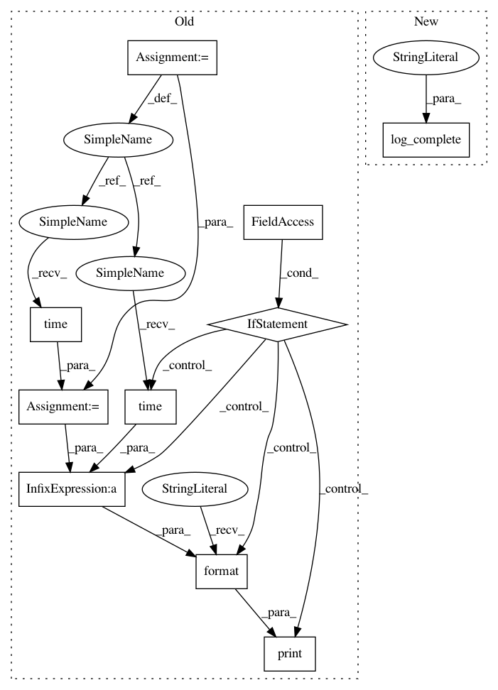

be95ff167e1ea0195e32beb0618228d18a4098eb,Python/phate/phate.py,PHATE,calculate_potential,#PHATE#Any#Any#,603
Before Change
diff_potential : array-like, shape=[n_samples, n_samples]
The diffusion potential fit on the input data
tic = time.time()
if self.verbose:
print("Calculating diffusion potential...")
// diffused diffusion operator
diff_op_t = np.linalg.matrix_power(diff_op, t)
if self.potential_method == "log":
// handling small values
diff_op_t = diff_op_t + 1e-3
self.diff_potential = -1 * np.log(diff_op_t)
elif self.potential_method == "sqrt":
self.diff_potential = np.sqrt(diff_op_t)
else:
raise ValueError("Allowable "potential_method" values: "log" or "
""sqrt". "{}" was passed.".format(
self.potential_method))
if self.verbose:
print("Calculated diffusion potential in {:.2f} seconds.".format(
time.time() - tic))
def von_neumann_entropy(self, t_max=100):
Calculate Von Neumann Entropy
Determines the Von Neumann entropy of the diffusion affinities
After Change
raise ValueError("Allowable "potential_method" values: "log" or "
""sqrt". "{}" was passed.".format(
self.potential_method))
log_complete("diffusion potential")
def von_neumann_entropy(self, t_max=100):
Calculate Von Neumann Entropy
In pattern: SUPERPATTERN
Frequency: 3
Non-data size: 10
Instances
Project Name: KrishnaswamyLab/PHATE
Commit Name: be95ff167e1ea0195e32beb0618228d18a4098eb
Time: 2018-05-28
Author: scottgigante@gmail.com
File Name: Python/phate/phate.py
Class Name: PHATE
Method Name: calculate_potential
Project Name: KrishnaswamyLab/PHATE
Commit Name: 6a321fd43e378b7a7fd208c85e48a581869f2e0d
Time: 2018-05-22
Author: scottgigante@gmail.com
File Name: Python/phate/phate.py
Class Name: PHATE
Method Name: fit_transform
Project Name: KrishnaswamyLab/PHATE
Commit Name: 6f32626effedfaeba3c51debb39d556302922728
Time: 2018-05-22
Author: scottgigante@gmail.com
File Name: Python/phate/phate.py
Class Name: PHATE
Method Name: fit_transform